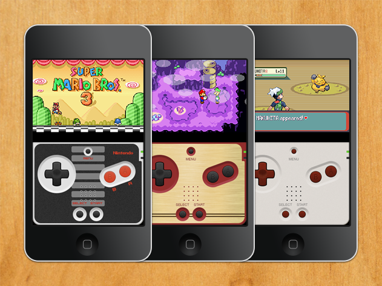
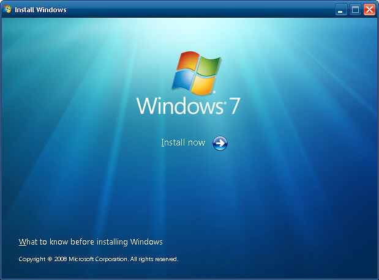
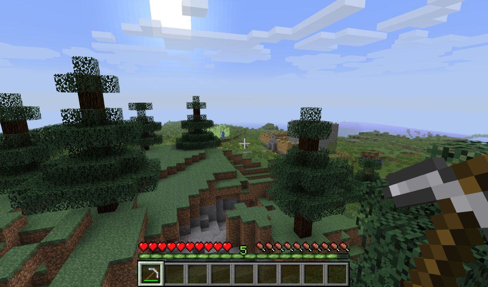
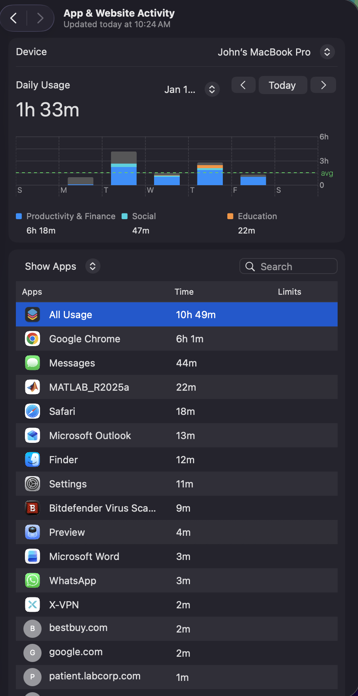

Technologies that have figured prominently in my attitudes about code and digital technology.
My name is John Gamal. I am from Virginia. I am currently in Pittsburgh, PA, studying Bioengineering at the University of Pittsburgh. For some time now, my primary means of experiencing stories and video games has been through this tiny handheld video game console. When it broke down, I could not afford to buy another one, and buying NEW games was out of the question. Losing my console felt as if I lost access to an entire world that I had only recently begun to discover. While I searched for a new way to play the games I love, I stumbled upon emulators for the Nintendo DS. At first, I didn’t even think about how they worked; I was just thrilled that they could work for me. However, the installation process was confusing, filled with unfamiliar terms, and when I finally found a game that started properly, it was nowhere near perfect. The audio lagged, the screen was misaligned, and the controls were awkwardly distributed. Nevertheless, I felt as if I had found a solution to a problem I had never thought I would have been able to solve. This experience changed the way I view digital technology. I now see it not just as a single, static piece of technology but as something that can be modified and adapted to fit different people with different knowledge levels and resources. Furthermore, I became increasingly aware of how technology can keep people out of it as well as provide access to it through finance or lack thereof. When I explore new devices or platforms, I always reference my experience with my broken DS and the emulator I came up with to play my old games. It makes me think about the people who have access to that particular new technology and under what conditions they have access to it.



Technologies that have figured prominently in my attitudes about code and digital technology.
Based on my screen time data, it's clear that a lot of what I do digitally occurs in just one window, with the majority of my time spent on Google Chrome compared to any other app. Basically, every aspect of my digital life (study/research, communication) as well as all of my "distraction" time is contained within the same Google Chrome window, which is reflected in my screen time data. So, although each activity within Google Chrome seems quite different to me at the time I engage in them, how they show up within my data is actually very similar. As I tracked my usage over the past year, I saw major changes in how I interacted with technology. After knowing I was recording screen time, I started becoming very conscious about when I opened new tabs or checked messages; I also noticed how often I used my laptop not for one long task but instead did numerous short tasks repeatedly, all of which added together without my knowing it. I wonder whether the way that I interact with digital systems also reflects how digital systems and code shape what we do and how we do it by making it easier for us to carry out and see certain activities while making it harder for us to see and participate in others. The data created for the purposes of this project accurately depicts my use of technology as being primarily based on productivity instead of social/entertainment purposes. My time spent in Chrome, MATLAB, and Outlook was more indicative of who I am as a student than I thought it would be. It also challenged the way I think about how I communicate. I feel like I spend a great deal of time communicating; however, the actual numbers show that I spent a much smaller portion of my day communicating than I initially thought. While there were many parts of my data that were accurate, there were also numerous aspects that were inaccurate. For example, a long period spent within the Chrome browser could represent either intense focus on schoolwork, casual browsing, or watching something on Netflix to relax; however, the visual representation of my time spent doesn't capture this distinction. The visualization provides an accurate measure of the duration of my session in Chrome, but it does not capture why I was using Chrome and what my emotional state was while I was using the technology. What I learned from this is that while there is generally a story being told through the data, it never tells the complete story; just as I learned through my work with emulators that there are multiple layers present within the framework of a single screen; I have learned from this project that there are multiple layers that affect a single data point (e.g., Number of sessions in my screen time chart) and therefore my relationship with technology is defined by the availability of technology; ease of access; stress levels; uncertainty; habit and therefore in and of themselves the available variables cannot be defined entirely by a category or represented in a bar graph.

How we learn has been changed by the use of Code and Digital Technology. The use of these tools has increased the availability of information and the immediacy and personalization of how we learn. You are no longer limited to learning from a textbook or attending Class but can also use Search Engines, Tutorials, Simulations, and Collaboration with Online Communities. The algorithms behind the recommended videos and suggested articles, along with the auto-completion of the questions you ask on the Internet, now determine how and what you see first. As a result, your way of learning is now less about your Teacher and Syllabus and more about algorithms determining your path of learning. The speed and flexibility of the current learning environment created through Code and Digital Technology is beneficial, but it also creates a loss of visibility to the path that you take to learn. It is important to recognize the role Code and Digital Technology play in that they are part of your overall "Digital Literacy". Digital Literacy has transitioned to mean: Understand How Tools Work, as well as How to Use Them. Recognizing that Digital Platforms have an Algorithmic Backbone, collect your Data, and also use Design Choices to influence you, helps you to question why certain information is presented to you, what information has been left out, and how you are influenced to behave. If we do not take these things into account, we run the risk of treating Digital Technology as Neutral; however, Digital Technologies have been shaped by Humans and the Values, Priorities, and Limitations they have imposed on Digital Systems. Therefore, when you learn to read and Write Code, you also learn to read and write the Rules Within the Digital World. This means you have the ability to not only participate in Digital Environments but also Critisize and, when possible, Redesign those Environments.
WATCH OUT A DUCK
In my opinion, the integration of technology and coding will eventually lead to advancements in the field of neuroengineering, which uses computational models and analytic methods to develop ways to study, interface with, and understand neural systems. I am excited about software's capacity to decode neural impulses into quantitative analysis tools for applications in research, diagnostics, and the development of brain-computer interaction systems. To reach this goal, I would like to improve upon or add to my experience programming in Python and MATLAB as it relates to developing new techniques for processing signals, developing ML-based classification systems, and analyzing neural data. As well as being able to do these things using programming languages (Python, MATLAB), I want to understand more about how to build systems that allow for real-time data processing and develop algorithms for classifying "noisy" signals generated by biological sources and their practical, experimental, or clinical utility. The role of technology is to facilitate the understanding and measurement of neural activity, and in turn, ultimately develop and implement new neurotechnologies that will improve the efficiency and accessibility of these systems.
⚡ Ignite the Code ⚡